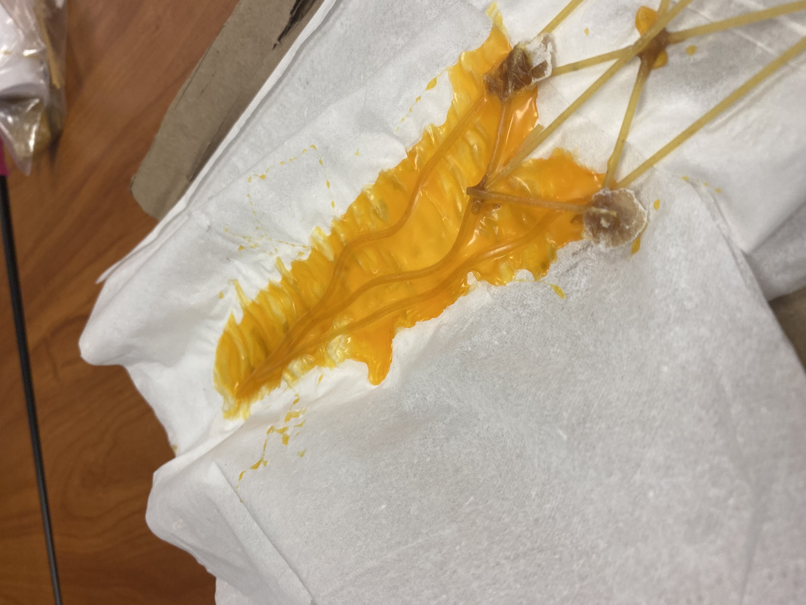

9-8-22 log # 3 I finish tinkercad thing and I am now in a group w/ppl woah. I also added 3 things to my website, so isnt that cool.
This is jim the owl and from now on he is the mascot of this website so get familiar with him because hes gonna be here for a while.

Log #4 9-16-22 this week I made progress with my rube goldberg machine project and we have begun working on it, from time to time I help my group with telling them the measurements and sometimes helping them with other stuff, so I think I should probably help them more, oh and one last thing I missed a day (first day of school that I missed this year) so I can't do the boat challenge which makes me sad ;(
Next week I am going to finish my rube goldberg machine and we are going to test it out so I really have to try my best to participate and help my group because I want them to have da best score for this project!!!
9-26-22 log #5 Today I am going to show you the stuff that I worked on that is related to the rube goldberg project
log #6 9-30-22 This week Mr Poole was gone cuz of covid and we had substitute teachers for the entire week, it was kind of a boring week I can't lie, when I was done with work for the week I was doing nothing so it was pretty boring however, I did do something. I made a prosthetic for a manatee, here is what it looks like.
log #7 10-7-22 This week I was gone for 2 DAYS so I was literally able to do nothing, besides the challenge, I didn't get to experience the whole laptop dissection thing because I was gone (IM SAD) however I paired up with someone and estimated how much wheels (yes wheels!) how many wheels were on campus (wheels to move things around) we didn't do the best but it was kinda fun, the first day I wasn't absent I learend a little bit about computer parts or something and today I am updating my website, so this week was pretty sad. :(
log #8 11-4-22 Wow long time since website update, anyways this week we started to learn electric engineering, personally I think its the most complicated thing we are learning, because it requires math and stuff. Anyways, I started to practice using something called a breadboard on tinkercad, pretty confusing stuff so hopefully I can figure this thing out. So below I've got like two screenshots of that stuff, so enjoy it or something. Anyways that is what I did on the first week of november, this is gonna be a hard subject in engineering so good luck to me I guess.log #9 11-10-22 this log is just about more progress about this subject, so I have made the breadboard IRL and I also did a challenge this week. I did all of this with a partner, so we did a worksheet about recording the resistance and volts of parts of the breadboard or something. Also, we did a challenge this week about trying to convince my teacher to either write down one to a million or take a math class. My partner and I decided to try to convince him to do math instead of writing to a million, I couldn't tell if we were successful or not but at least we tried. So that leads us to today where I am writing this log, so yeah, down below is a photo of the IRL breadboard.
log #12 12-15-22 What up sir, this week we spent our time making bridges, and working on the presentation, we built our second design, and our third design, the third design is just a modified version of the second design, and tomorrow (the 16th) I am going to test it, hopefully it goes well, future me please tell me that it went well. Anyways, through our journey we went through many bumps, the spaghetti kept breaking, the bridge kept on breaking as well, and it was hard to come up with the designs, so overall we had a fun time doing this I guess you can say, a good time, also we did a challenge that doesn't relate to the spaghetti bridge but it was fun anyways, so that was nice. Anyways below are some images that I have of the bridges.
Log #13 1-13-23 What is up!!!! I am back from my winter break and I am here to talk about my break and what happened with the test for the spaghetti bridge. During winter break I didn't really do anything, but what I did do was I went to the desert with my family and I stayed in a trailer for around a day. Out there I decided to make s'mores over a fire, and I slept in the trailer, I also practiced driving out in the desert in my dad's truck and I didn't do so bad (not a real test for a permit or anything just a fun time driving out in the desert.)
SPAGHETTI BRIDGE TEST. Hi so if you're reading this first then you probably didn't want to read about my vacation, that's ok. The test went well, it actually held some water and didn't break for a while, it only broke once we had to lift it up, it snapped. But it actually did well compared to our other tests, so I'm proud of it at least. So down below is a video of the test (if it doesn't work then sorry you'll have to take my word for it when I say it was a good test)
Log #14 1-19-23 This week we didnt really learn anything, however what we did do is we kinda did a shark tank scenario thing, what I mean is that we created a fake product (didn't make a physical item) and we presented it and made a proposal, (how much money we want + stake, etc.) so this presentation was about a product about making virtual reality controllers more comfortable by turning them into gloves. Anyways, this went okay, it wasn't really the best since the presentation was kind of bad in my opinion, and it was kind of awkward to speak, so it wasn't really the best experience, but its okay because that doesn't mean I didn't enjoy it, I had a slight enjoyment of that experience.
Log #15 1-27-23 This week we learned a little bit about chemical engineering, and we also did a little thing outside where we created oobleck, a non newtonian fluid, it's made out of corn starch and water, if the ratio is correct, oobleck will be created. What oobleck is, it's basically a liquid and a solid, but the states change depending on how much stress is on, if you punch the oobleck, it becomes a solid, and if you slowly put your hand in the oobleck, it will become a liquid. It's a very weird substance, and I recommend trying it out if you have some cornstarch lying around. Anyways, the second thing we did this week was we started our new long term project, we can either do it in a group or solo, I am doing it solo, and my project is about an arduino car, there is one other thing about it but that's all the info I'll give for now. So that is what I did during the week. Sorry this isn't in chronological order but I forgot to say that we also made card towers and we tried to make the tallest one, my group didn't succeed but we did make it pretty tall, and in the end it was a pretty fun challenge to do.
How's it going my mans? It has been over a month since I last updated which I greatly apologize for, I haven't been putting in my full effort lately. But this log is not going to be me asking for pity, no no it is about me talking about the long term project and how it went, so the arduino car was finished, and it wasn't the best of mine but it moved which means that it worked. It took around a week to get the motors to run and then the last days I used to get it all built together, sadly it wasn't the original product I was looking for but it still worked out for me in a way which was good. If I can, I will attach some images below and you will see what my car looked like, it's not pretty though so just keep that in mind, but anyway the project was pretty cool, being able to build the car alone was an experience, and then testing it out was fun, I enjoyed this experience definitely.
Hi, welcome back, we had a delay because the websites decided to die momentarily,but now we are good! Anyways these past two weeks have been okay, we did our egg drops and we also decided to start new groups for our final, it's going to take eight weeks because we're making a life sized cardboard boat (that will float on water), so it will take 8 weeks as a result. For the challenge, we have only one roll of duct tape to use for the entire project, and also a limited supply of rope/string, hopefully everything goes well!
What is up people, welcome to log 20!!! Anyways, this time we decided to start our boat project thing, and we created our cad and we made a little prototype as well, the real boat is supposed to be life sized so the prototype isn't the real boat, the boat is still our final so this will be a long long project, and it should take around 7 more weeks to complete, so by the time it's done, the school year should be coming to an end. Below are some pictures.
Hi. As I'm writing this (around 3 pm), tonight will be open house, so if you're reading this, then hello! If not, then you're probably reading it after, but that's okay, all that matters is if you're reading this at all, but anyways, this week we tested our boat prototype, and sadly, it failed. However, it wasn't a total failure, as it held a little bit, before water started to get to it, and that marked the end of our first prototype. We are currently creating a new prototype. It is much larger, and it will hopefully be better. But that is all I have to say right now, thank you for reading this I guess. Enjoy open house!
Greetings viewers. Today I am writing about how the week has been. Okay so it was a four day school week, however, I wasn't here for one of those days, so unfortunately I was only here for three days, during this week we have decided to make a brand new boat, and it has four layers for the base and so far walls are unknown, but I know it'll be good since we are already preparing a lot of it. Below are pictures and stuff, enjoy!

-Jim the Owl
Hello people, happy Star Wars day. This week we have done more work and preparation for our boat, however progress isn't going that fast, but I still think we will complete it by the deadline. The plans still do look good and I very much hope that they work in the end, however I sadly don't have much to say today so I guess just enjoy this small update.
Log #24 5-22-23 We are entering the end of the year, so this may be either the second to last log or the third to last one, so enjoy one of the last logs ever :(. Anyways, the project is going okay, we have started to build the boat, but during the weekend, the boat unfortunately, decided to break on us and just lose it's head (literally) as the front of the boat just fell off. However, my group and I fixed this, so it shouldn't be a problem anymore, hopefully, I don't know because by the time I'm writing this I haven't found out if its broken or not after we fixed it. But I have my hopes high for this so I don't feel bad about it. In fact, I think my group and I will successfully finish this boat project. Pictures below, and yeah.
Log #24 5-26-23 We are getting close to the end folks. Hello, It is me, and I am back for another update!! So anyways I'd like to say thank you to the little people that have been paying attention to my website, you nonexistent beings are loved by me. Second, I would like to say that our boat is looking quite exquisite, as we are finished with it, and it has gone through some bad times, but I think it was worth it for the end result. If any of my group members are reading this (somehow) then thank you to all three of you, and I'd like to wish all of us good luck for the final, and after this year. Thank you all and you were all great team members. However, it is not the end just yet, we have to go on the boat and cross the pool, and this final terrifies me... as I am scared of water and the pool goes deeper than my height... and I'm not very good at swimming. I hope to still be alive! Thank you for reading aaaaaaaaaa bye!
Hello everyone. This is my last log I will be posting on here. I hope you all enjoyed the journey we all had. I did the pool final thing, and our boat ended up surviving... enough to cross but it ended up dying during the trip it would have to come back. But it was a success! I ended up crossing along with my teammate. Thank you Mr. Poole for the journey you have given all of us, and your support. I have enjoyed this class and I hope I can get another class as good as this one. Below is one last picture of me and my group (guess which boy I am) Thank you very much and please enjoy your life.